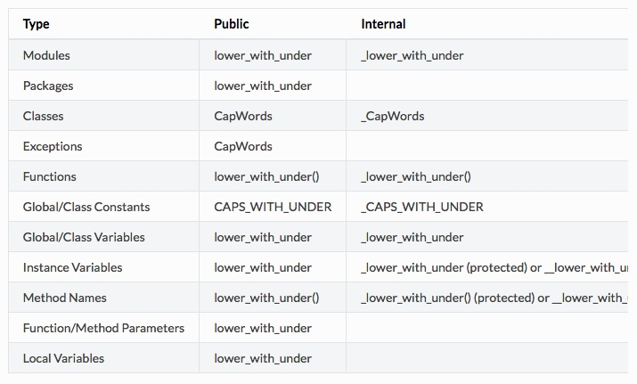

函数与方法装饰器
- 优点：优雅的在函数上指定一些转换，该转换可能减少一些重复代码，保持已有函数不变（enforce invariants）
- 缺点：装饰器可以在函数的参数或返回值上执行任何操作，这可能导致让人惊异的隐藏行为。而且，装饰器在导入时执行。从装饰器代码的失败中恢复更加不可能。
- 结论：如果好处很显然，就明智而谨慎的使用装饰器。装饰器应该遵守和函数一样的导入和命名规则。装饰器的 Python 文档应该清晰的说明函数是一个装饰器。请为装饰器编写单元测试。避免装饰器自身对外界的以来（即不要依赖于文件、socket、数据库连接等）。
线程
优先使用 Queue 模块的 Queue 数据类型作为线程间的数据通信方式。另外，使用 threading 模块及其锁原语（locking primitives）。了解条件变量的合适使用方式，这样你就可以使用 threading.Condition 来取代低级级别的锁了。
威力过大的特性
- Tip：避免使用这些特性
- 优点：强大的语言特性，能让你的代码更紧凑
- 缺点：使用这些很 cool 的特性十分诱人，但不是绝对必要。使用奇技淫巧的代码将更加难以阅读和调试。开始可能还好，但当你回顾代码，它们可能比那些稍长一点但是更直接的代码更加难以理解。
- 结论：在你的代码中避免使用这些特性。
注释
Python 有一种独一无二的注释方式：使用文档字符串。文档字符串是包、模块、类或函数的第一个语句。这些字符串可以通过对象的 __doc__ 成员被自动提取，并且被 pydoc 所用。
组织方式：
- 第一行以句号、问号或惊叹号结尾的概述（或者改文档字符串只有单纯的一行）
- 接着是一个空行
- 接着是文档字符串的剩余部分，它应当与文档字符串的第一行的第一个引号对齐
模块
每个文件应该包含一个许可样板。根据项目使用的许可（例如：Apache 2.0、BSD、LGPL、GPL）选择合适的样板。
函数和方法
一个函数必须要有文档字符串，除非它满足以下条件：
- 外部不可见
- 非常短小
- 简单明了
文档字符串应该包含函数做什么，以及输入和输出的详细描述。通常，不应该描述「怎么做」，除非是一些复杂的算法。文档字符串应该提供足够的信息，当别人编写代码调用该函数时，他不需要看一行代码，只要看文档字符串就可以了。对于复杂的代码，在代码旁边加注释胡比使用文档字符串更有意义。
关于函数的几个方面应该在特定的小节中进行描述记录，这几个方面入下文所示，每节应该以一个标题行开始。标题行以冒号结尾，除标题行外，节的其他内容应被缩进 2 个空格。
- Args：列出每个每个参数的名字，并在名字后面使用一个冒号和空格，分隔对该参数的描述。如果描述太长超过了单行 80 个字符，使用 2 或者 4 个空格的悬挂缩进。描述应该包括所需的类型和含义。如果一个函数接受
可变长参数列表或者任意关键字参数，应该详细列出这两者。 - Returns（或者 Yields，用于生成器）：描述返回值的类型和语义，如果函数返回 None，这一部分可以省略。
- Raises：列出与接口有关的所有异常。
例子：
def fetch_bigtable_rows(big_table, keys, other_silly_variable=None):
"""Fetches rows from a Bigtable.
Retrieves rows pertaining to the given keys from the Table instance
represented by big_table. Silly things may happen if
other_silly_variable is not None.
Args:
big_table: An open Bigtable Table instance.
keys: A sequence of strings representing the key of each table row
to fetch.
other_silly_variable: Another optional variable, that has a much
longer name than the other args, and which does nothing.
Returns:
A dict mapping keys to the corresponding table row data
fetched. Each row is represented as a tuple of strings. For
example:
{'Serak': ('Rigel VII', 'Preparer'),
'Zim': ('Irk', 'Invader'),
'Lrrr': ('Omicron Persei 8', 'Emperor')}
If a key from the keys argument is missing from the dictionary,
then that row was not found in the table.
Raises:
IOError: An error occurred accessing the bigtable.Table object.
"""
pass
类
类应该在其定义下有一个用于描述该类的文档字符串。如果你的类有公有属性，那么文档中应该有一个属性段，并且应该遵守和函数参数相同的格式。
class SampleClass(object):
"""Summary of class here.
Longer class information....
Longer class information....
Attributes:
likes_spam: A boolean indicating if we like SPAM or not.
eggs: An integer count of the eggs we have laid.
"""
def __init__(self, likes_spam=False):
"""Inits SampleClass with blah."""
self.likes_spam = likes_spam
self.eggs = 0
def public_method(self):
"""Performs operation blah."""
块注释和行注释
最需要些注释的是代码中那些技巧性的部分。对于复杂的操作，应该在其操作开始前写上若干行注释，对于不是一幕了然的代码，应该在其行尾添加注释。
为了提高可读性，注释至少应该离开代码 2 个空格。
绝对不要描述代码，假设阅读代码的人比你更懂 Python，他只是不知道你的代码要做什么。
类
如果一个类不继承自其它类，就显式的从 object 继承，嵌套类也一样。
TODO 注释
TODO 注释应该在所有开头处包含「TODO」字符串，紧跟着的是用括号括起来的你的名字，email 地址或者其他标识符。接着必须有一行注释，解释要做什么。
Example：
# TODO(kl@gmail.com): Use a "*" here for string repetition.
# TODO(Zeke) Change this to use relations.
如果你的 TODO 是「将来做某事」的形式，那么请确保你包含了一个指定的日期或者一个特定的时间。
导入格式
每个导入应该独占一行。导入总应该放在文件顶部，位于模块注释和文档字符串之后，模块全局变量和常量之前，导入应该按照从最通用到最不通用的顺序分组：
- 标准库导入
- 第三方库导入
- 应用程序制定导入
每种分组中，应该根据每个模块的完整包路径按字典顺序排序，忽略大小写。
访问控制
字啊 Python 中，对于琐碎又不太重要的访问函数，你应该直接使用公有变量来取代它们，这样可以避免额外的函数调用开销。当添加更多的功能时，你可以用属性（property）来保持语法的一致性。
另一方面，如果访问更复杂，或者变量的访问开销很显著，那么你应该使用像 get_foo() 和 set_foo() 这样的函数调用。如果之前的代码行为允许通过属性（property）访问，那么久不要井新的访问函数与属性绑定。这样，任何试图通过老方法访问变量的代码就没法运行，使用者也就会意识到复杂性发生了变化。
命名
Python 之父 Guido 推荐的规范：
